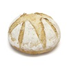

Pan de Hogaza
Pan de 500 gr, con una corteza dura y un montón de miga. Ideal para poder rellenar y se conserva en el tiempo
Pan de 500 gr, con una corteza dura y un montón de miga. Ideal para poder rellenar y se conserva en el tiempo
Si prefieres un pan más refinado ideal para bocatas, este es tu pan!!!